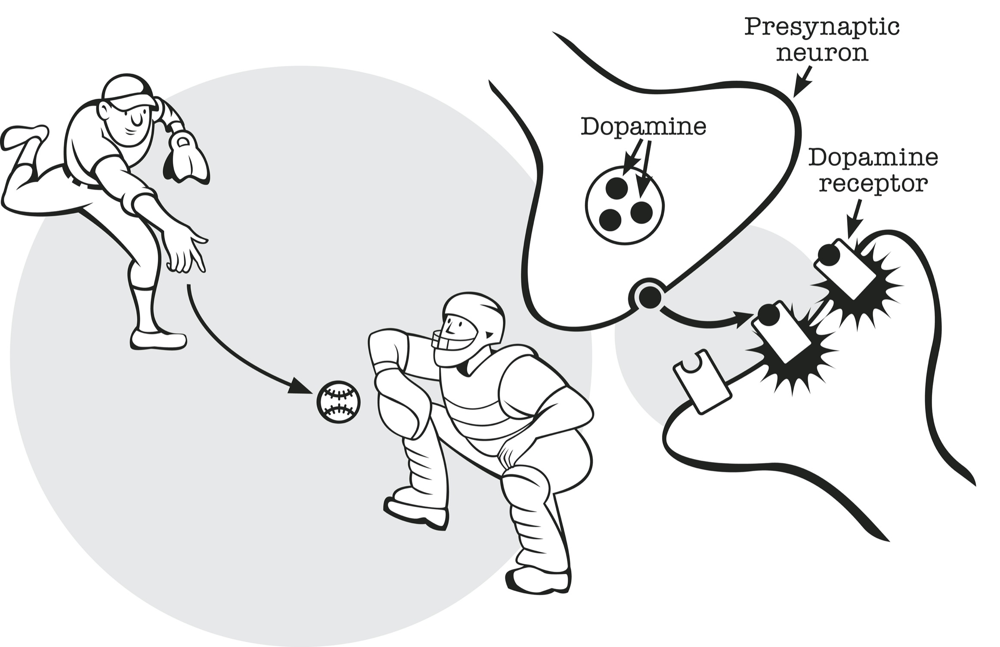
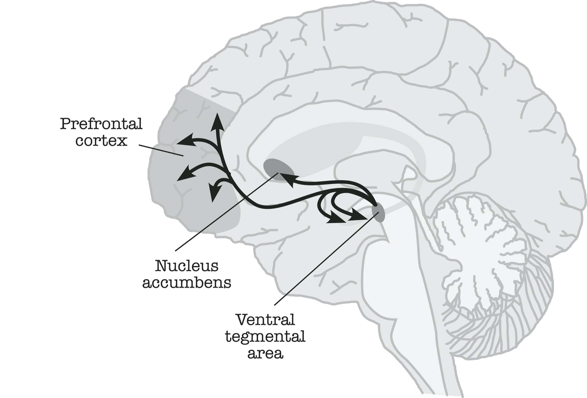
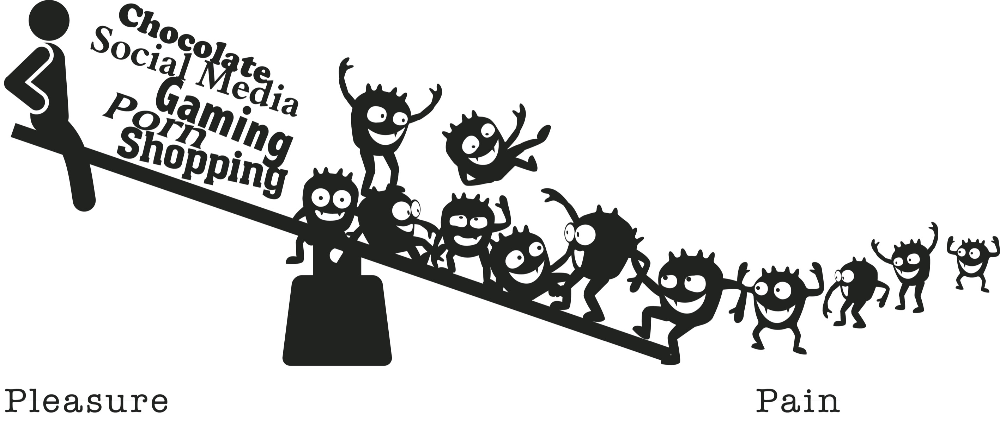
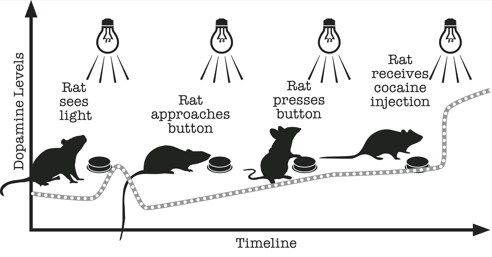

Chương 3 — Cán cân khoái lạc – đau đớn
CHƯƠNG 3
Cán cân Khoái lạc – Đau đớn
Những tiến bộ của khoa học thần kinh trong năm mươi đến một trăm năm qua, bao gồm các bước tiến về hóa sinh, kỹ thuật chẩn đoán hình ảnh mới và sự ra đời của sinh học tính toán, đã làm sáng tỏ các quá trình phần thưởng cơ bản. Bằng cách hiểu rõ hơn các cơ chế chi phối nỗi đau và khoái lạc, chúng ta có thể có được cái nhìn sâu sắc mới về lý do và cách thức mà việc hưởng thụ quá nhiều khoái lạc lại dẫn đến nỗi đau.
Dopamine
Các tế bào chức năng chính của não bộ được gọi là nơ-ron (tế bào thần kinh). Chúng giao tiếp với nhau tại các khớp thần kinh (synapse) thông qua tín hiệu điện và các chất dẫn truyền thần kinh.
Các chất dẫn truyền thần kinh giống như những quả bóng chày. Người ném bóng là nơ-ron tiền synapse. Người bắt bóng là nơ-ron hậu synapse. Khoảng không giữa người ném và người bắt là khe synapse. Cũng giống như quả bóng được ném qua lại giữa người ném và người bắt, các chất dẫn truyền thần kinh bắc cầu qua khoảng cách giữa các nơ-ron: những sứ giả hóa học điều hòa các tín hiệu điện trong não. Có rất nhiều chất dẫn truyền thần kinh quan trọng, nhưng hãy tập trung vào dopamine.
CHẤT DẪN TRUYỀN THẦN KINH

Dopamine lần đầu tiên được xác định là một chất dẫn truyền thần kinh trong não người vào năm 1957 bởi hai nhà khoa học làm việc độc lập: Arvid Carlsson cùng nhóm nghiên cứu của ông tại Lund, Thụy Điển, và Kathleen Montagu, làm việc ở vùng ngoại ô London. Carlsson sau đó đã giành giải Nobel Sinh lý học hoặc Y học.
Dopamine không phải là chất dẫn truyền thần kinh duy nhất tham gia vào quá trình xử lý phần thưởng, nhưng hầu hết các nhà khoa học thần kinh đều đồng ý rằng nó nằm trong số những chất quan trọng nhất. Dopamine có thể đóng vai trò lớn hơn trong động lực tìm kiếm phần thưởng so với bản thân cảm giác khoái lạc của phần thưởng đó. Muốn nhiều hơn là thích. Những con chuột biến đổi gen không thể tạo ra dopamine sẽ không tìm kiếm thức ăn, và sẽ chết đói ngay cả khi thức ăn được đặt ngay trước miệng chúng chỉ vài inch. Tuy nhiên, nếu thức ăn được đưa trực tiếp vào miệng chúng, chúng sẽ nhai và nuốt thức ăn, và có vẻ như vẫn thưởng thức nó.
Bất chấp những tranh luận về sự khác biệt giữa động lực và khoái lạc, dopamine vẫn được sử dụng để đo lường khả năng gây nghiện của bất kỳ hành vi hay loại thuốc nào. Một loại thuốc giải phóng càng nhiều dopamine trong con đường phần thưởng của não (một mạch não kết nối vùng trần bụng [ventral tegmental area], nhân nằm [nucleus accumbens] và vỏ não trước trán [prefrontal cortex]), và giải phóng dopamine càng nhanh, thì loại thuốc đó càng dễ gây nghiện.
CÁC CON ĐƯỜNG PHẦN THƯỞNG DOPAMINE TRONG NÃO

Điều này không có nghĩa là các chất dopamine cao theo nghĩa đen chứa sẵn dopamine. Thay vào đó, chúng kích hoạt sự giải phóng dopamine trong con đường phần thưởng của não bộ chúng ta.
Đối với một con chuột trong hộp thí nghiệm, sô-cô-la làm tăng lượng dopamine cơ bản giải phóng trong não lên 55 phần trăm, tình dục làm tăng 100 phần trăm, nicotine 150 phần trăm, và cocaine 225 phần trăm. Amphetamine—hoạt chất có trong các loại ma túy đường phố như “hàng đá” (speed, ice, shabu) cũng như trong các loại thuốc kê đơn như Adderall dùng để điều trị rối loạn giảm chú ý—làm tăng sự giải phóng dopamine lên tới 1.000 phần trăm. Theo cách tính này, một hơi hút từ tẩu ma túy đá tương đương với mười lần đạt cực khoái.
PHẦN THƯỞNG VÀ SỰ GIẢI PHÓNG DOPAMINE

Khoái lạc và Đau đớn Nằm Cùng Một Chỗ
Bên cạnh việc phát hiện ra dopamine, các nhà khoa học thần kinh đã xác định rằng khoái lạc và đau đớn được xử lý ở những vùng não chồng lấn lên nhau và hoạt động thông qua cơ chế quá trình đối lập. Một cách nói khác là khoái lạc và đau đớn hoạt động giống như một cái cán cân.
Hãy tưởng tượng não bộ của chúng ta chứa một cái cân—một chiếc cân đòn với điểm tựa nằm ở chính giữa. Khi không có gì đặt lên cân, nó nằm ngang bằng với mặt đất. Khi chúng ta trải nghiệm khoái lạc, dopamine được giải phóng trong con đường phần thưởng và cán cân nghiêng về phía khoái lạc. Cán cân nghiêng càng nhiều và càng nhanh, chúng ta càng cảm thấy nhiều khoái lạc.

Nhưng đây là điều quan trọng về chiếc cân này: Nó muốn duy trì trạng thái thăng bằng, tức là ở trạng thái cân bằng. Nó không muốn bị nghiêng quá lâu về bên này hay bên kia. Do đó, mỗi khi cán cân nghiêng về phía khoái lạc, những cơ chế tự điều chỉnh mạnh mẽ sẽ lập tức vào cuộc để đưa nó trở lại thăng bằng. Những cơ chế tự điều chỉnh này không đòi hỏi suy nghĩ có ý thức hay hành động của ý chí. Chúng chỉ đơn giản xảy ra, giống như một phản xạ.
Tôi thường hình dung hệ thống tự điều chỉnh này như những con tiểu yêu nhỏ bé (gremlins) nhảy lên phía bên đau đớn của cán cân để đối trọng với sức nặng ở phía bên khoái lạc. Những con tiểu yêu này đại diện cho hoạt động của cân bằng nội môi (homeostasis): xu hướng của mọi hệ thống sống nhằm duy trì sự cân bằng sinh lý.

Một khi cán cân đã về lại mức thăng bằng, nó vẫn tiếp tục đà đó, nghiêng một lượng tương đương và ngược chiều sang phía bên đau đớn.

Vào những năm 1970, hai nhà khoa học xã hội Richard Solomon và John Corbit đã gọi mối quan hệ tương hỗ này giữa khoái lạc và đau đớn là lý thuyết quá trình đối lập (opponent-process theory): “Bất kỳ sự chệch hướng kéo dài hoặc lặp đi lặp lại nào khỏi trạng thái trung tính về khoái cảm hay cảm xúc . . . đều phải trả giá.” Cái giá đó là một “phản ứng hậu kỳ” mang giá trị đối lập với tác nhân kích thích. Hay như câu ngạn ngữ xưa vẫn nói: Cái gì lên cao rồi cũng phải đi xuống.
Hóa ra, nhiều quá trình sinh lý trong cơ thể cũng được chi phối bởi các hệ thống tự điều chỉnh tương tự. Chẳng hạn, Johann Wolfgang von Goethe, Ewald Hering và những người khác đã chứng minh cách nhận thức màu sắc được chi phối bởi một hệ thống quá trình đối lập. Việc nhìn chằm chằm vào một màu trong thời gian dài sẽ tự phát tạo ra hình ảnh của màu “đối lập” trong mắt người nhìn. Hãy nhìn chăm chú vào một hình ảnh màu xanh lá cây trên nền trắng một lúc, rồi quay sang nhìn một trang giấy trắng trống, bạn sẽ thấy não bộ mình tạo ra một dư ảnh màu đỏ. Nhận thức về màu xanh lá cây lần lượt nhường chỗ cho nhận thức về màu đỏ. Khi màu xanh lá cây được bật lên, màu đỏ không thể xuất hiện, và ngược lại.
Sự dung nạp (Thích nghi thần kinh)
Tất cả chúng ta đều từng trải qua cảm giác thèm muốn ngay sau khi hưởng thụ khoái lạc. Dù là với tay lấy miếng khoai tây chiên thứ hai hay nhấp chuột chơi thêm một ván trò chơi điện tử nữa, việc muốn tái tạo những cảm giác dễ chịu đó hoặc cố gắng không để chúng phai nhạt là điều hoàn toàn tự nhiên. Giải pháp đơn giản là cứ tiếp tục ăn, hoặc chơi, hoặc xem, hoặc đọc. Nhưng có một vấn đề với điều đó.
Khi tiếp xúc lặp đi lặp lại với cùng một tác nhân kích thích khoái lạc hoặc tương tự, độ lệch ban đầu về phía khoái lạc trở nên yếu hơn và ngắn hơn, còn phản ứng hậu kỳ về phía đau đớn lại trở nên mạnh hơn và dài hơn—một quá trình mà các nhà khoa học gọi là thích nghi thần kinh (neuroadaptation). Nghĩa là, qua sự lặp lại, những con tiểu yêu của chúng ta trở nên to lớn hơn, nhanh nhẹn hơn và đông đảo hơn, khiến chúng ta cần nhiều hơn loại chất gây nghiện mình chọn để đạt được cùng một hiệu ứng.
Việc cần nhiều chất hơn để cảm nhận khoái lạc, hoặc cảm thấy ít khoái lạc hơn ở cùng một liều lượng nhất định, được gọi là sự dung nạp (tolerance). Sự dung nạp là một yếu tố quan trọng trong quá trình hình thành chứng nghiện.

Đối với tôi, việc đọc bộ truyện Chạng vạng (Twilight) lần thứ hai vẫn rất thú vị nhưng không còn thú vị bằng lần đầu tiên. Đến lần thứ tư tôi đọc nó (vâng, tôi đã đọc trọn bộ truyện tới bốn lần), niềm khoái lạc của tôi đã suy giảm đáng kể. Việc đọc lại không bao giờ sánh được với lần đầu tiên đó. Hơn nữa, mỗi lần đọc xong, tôi lại bị bỏ lại với một cảm giác bất mãn sâu sắc hơn và khao khát mãnh liệt hơn muốn tìm lại cảm giác mình từng có khi đọc lần đầu. Khi trở nên “lờn” với Chạng vạng, tôi buộc phải tìm kiếm những dạng thức mới hơn, mạnh mẽ hơn của cùng một loại “thuốc” đó để cố gắng nắm bắt lại cảm giác trước kia.
Với việc sử dụng chất gây nghiện nặng và kéo dài, cán cân khoái lạc – đau đớn cuối cùng bị kéo trĩu hẳn về phía đau đớn. Điểm định chuẩn khoái cảm (hedonic set point) của chúng ta thay đổi khi khả năng trải nghiệm khoái lạc đi xuống và sự dễ bị tổn thương trước nỗi đau đi lên. Bạn có thể hình dung điều này giống như việc những con tiểu yêu cắm trại luôn ở phía bên đau đớn của cán cân, mang theo cả nệm hơi và bếp nướng di động.

Tôi nhận thức sâu sắc về tác động này của các chất gây nghiện có hàm lượng dopamine cao lên con đường phần thưởng của não bộ vào đầu những năm 2000, khi tôi bắt đầu thấy nhiều bệnh nhân hơn tìm đến phòng khám trong tình trạng đang điều trị bằng thuốc giảm đau opioid liều cao, dài hạn (như OxyContin, Vicodin, morphine, fentanyl) cho chứng đau mạn tính. Mặc dù dùng thuốc opioid liều cao và kéo dài, cơn đau của họ theo thời gian chỉ càng tệ hơn. Tại sao? Bởi vì việc tiếp xúc với opioid đã khiến não bộ của họ thiết lập lại cán cân khoái lạc – đau đớn nghiêng hẳn về phía đau đớn. Giờ đây cơn đau ban đầu của họ trở nên tồi tệ hơn, và họ xuất hiện thêm những cơn đau mới ở các bộ phận cơ thể vốn trước đây không hề đau.
Hiện tượng này, được quan sát rộng rãi và kiểm chứng qua các nghiên cứu trên động vật, được gọi là chứng tăng cảm giác đau do opioid (opioid-induced hyperalgesia). Algesia, bắt nguồn từ từ Hy Lạp algesis, có nghĩa là sự nhạy cảm với cơn đau. Hơn thế nữa, khi những bệnh nhân này giảm liều dần để cai opioid, nhiều người trong số họ đã cải thiện được tình trạng đau đớn.
Nhà khoa học thần kinh Nora Volkow cùng các đồng nghiệp đã chứng minh rằng việc tiêu thụ nặng nề và kéo dài các chất kích thích dopamine cao cuối cùng sẽ dẫn đến trạng thái thiếu hụt dopamine.
Volkow đã kiểm tra sự truyền dẫn dopamine trong não của nhóm đối chứng khỏe mạnh so với những người nghiện nhiều loại ma túy khác nhau sau khi họ ngừng sử dụng hai tuần. Những hình ảnh chụp não thật sự gây chấn động. Trong ảnh chụp não của người khỏe mạnh đối chứng, một vùng não hình hạt đậu thận liên quan đến phần thưởng và động lực sáng rực màu đỏ tươi, cho thấy mức độ hoạt động cao của chất dẫn truyền thần kinh dopamine. Trong ảnh chụp của những người nghiện đã ngừng sử dụng hai tuần trước đó, cùng vùng não hình hạt đậu thận ấy lại chứa rất ít hoặc không có màu đỏ nào, cho thấy sự truyền dẫn dopamine rất ít hoặc gần như bằng không.
Như Tiến sĩ Volkow và các đồng nghiệp đã viết: “Sự suy giảm các thụ thể DA D2 ở những người lạm dụng ma túy, kết hợp với sự suy giảm giải phóng DA, sẽ dẫn đến việc giảm độ nhạy của các mạch phần thưởng đối với sự kích thích từ những phần thưởng tự nhiên.” Một khi điều này xảy ra, chẳng còn thứ gì mang lại cảm giác dễ chịu nữa.
Nói cách khác, các cầu thủ trong Đội Dopamine đã thu dọn bóng và găng tay rồi đi về nhà.
TÁC ĐỘNG CỦA CHỨNG NGHIỆN LÊN CÁC THỤ THỂ DOPAMINE

Trong khoảng hai năm tôi đọc ngấu nghiến tiểu thuyết lãng mạn một cách cưỡng bức, cuối cùng tôi đã đi đến một điểm mà không thể tìm thấy cuốn sách nào khiến mình thích thú nữa. Cứ như thể tôi đã đốt cháy trung tâm khoái lạc đọc tiểu thuyết của mình, và không cuốn sách nào có thể hồi sinh nó được nữa.
Nghịch lý nằm ở chỗ chủ nghĩa khoái lạc—việc theo đuổi khoái lạc vì chính bản thân nó—lại dẫn đến chứng mất khoái cảm (anhedonia), tức là tình trạng mất khả năng tận hưởng bất kỳ loại khoái lạc nào. Đọc sách vốn luôn là nguồn khoái lạc và chốn trốn chạy chính của tôi, nên thật sốc và đau buồn khi nó không còn tác dụng nữa. Ngay cả lúc đó, tôi vẫn rất khó từ bỏ nó.
Những bệnh nhân mắc chứng nghiện của tôi mô tả cách họ đi đến điểm mà loại thuốc của họ không còn tác dụng gì với họ nữa. Họ không còn thấy phê chút nào nữa. Thế nhưng nếu không dùng thuốc, họ lại cảm thấy khốn khổ. Các triệu chứng phổ biến của hội chứng cai bất kỳ chất gây nghiện nào đều là lo âu, cáu kỉnh, mất ngủ và trạng thái phiền muộn (dysphoria).
Một cán cân khoái lạc – đau đớn bị nghiêng về phía đau đớn chính là thứ thúc đẩy con người tái nghiện ngay cả sau những khoảng thời gian kiêng cữ kéo dài. Khi cán cân của chúng ta nghiêng về phía đau đớn, chúng ta thèm khát chất gây nghiện chỉ để cảm thấy bình thường (một cán cân thăng bằng).
Nhà khoa học thần kinh George Koob gọi hiện tượng này là “tái nghiện do phiền muộn thúc đẩy” (dysphoria driven relapse), trong đó việc quay lại sử dụng không phải xuất phát từ sự tìm kiếm khoái lạc mà từ mong muốn xoa dịu nỗi đau khổ về thể xác và tâm lý của trạng thái cai kéo dài.
Đây là tin tốt. Nếu chúng ta chờ đủ lâu, não bộ của chúng ta (thường) sẽ tái thích nghi với sự vắng mặt của chất gây nghiện và chúng ta sẽ thiết lập lại cân bằng nội môi cơ bản: một cán cân thăng bằng. Một khi cán cân đã thăng bằng, chúng ta lại có thể tìm thấy niềm vui từ những phần thưởng giản dị hằng ngày. Đi dạo. Ngắm bình minh. Thưởng thức bữa ăn cùng bạn bè.

Con người, Địa điểm và Đồ vật
Cán cân khoái lạc – đau đớn không chỉ bị kích hoạt bởi việc tiếp xúc lại với chính chất gây nghiện mà còn bởi việc tiếp xúc với các tín hiệu gắn liền với việc sử dụng chất gây nghiện. Trong hội Người nghiện rượu Ẩn danh (Alcoholics Anonymous), cụm từ cửa miệng để mô tả hiện tượng này là con người, địa điểm và đồ vật. Trong thế giới khoa học thần kinh, điều này được gọi là học tập phụ thuộc tín hiệu (cue-dependent learning), hay còn gọi là điều kiện hóa cổ điển (Pavlov).
Ivan Pavlov, người giành giải Nobel Sinh lý học hoặc Y học năm 1904, đã chứng minh rằng loài chó sẽ tiết nước bọt theo phản xạ khi được đưa cho một miếng thịt. Khi việc đưa thịt liên tục đi kèm với tiếng chuông reo, những con chó sẽ tiết nước bọt ngay khi nghe thấy tiếng chuông, ngay cả khi chưa có miếng thịt nào xuất hiện ngay lập tức. Cách lý giải là những con chó đã học được cách liên kết miếng thịt—một phần thưởng tự nhiên—với tiếng chuông—một tín hiệu có điều kiện. Chuyện gì đang xảy ra trong não bộ?
Bằng cách đưa một đầu dò phát hiện vào não chuột, các nhà khoa học thần kinh có thể chứng minh rằng dopamine được giải phóng trong não để đáp ứng với tín hiệu có điều kiện (ví dụ: tiếng chuông, máy đếm nhịp, ánh sáng) từ rất lâu trước khi bản thân phần thưởng được nạp vào cơ thể (ví dụ: tiêm cocaine). Đợt tăng vọt dopamine trước phần thưởng nhằm đáp ứng với tín hiệu có điều kiện giải thích cho cảm giác khoái lạc dự báo mà chúng ta trải nghiệm khi biết những điều tốt đẹp sắp đến.
MỨC DOPAMINE: DỰ BÁO VÀ THÈM MUỐN

Ngay sau tín hiệu có điều kiện, sự phóng thích dopamine trong não giảm xuống không chỉ về mức cơ bản (não luôn có một mức phóng thích dopamine nền ngay cả khi không có phần thưởng), mà còn xuống dưới mức cơ bản. Trạng thái thiếu hụt dopamine nhỏ thoáng qua này chính là thứ thúc đẩy chúng ta tìm kiếm phần thưởng của mình. Mức dopamine dưới mức cơ bản tạo ra cơn thèm muốn. Cơn thèm muốn chuyển hóa thành hành động có chủ đích để có được chất gây nghiện.
Đồng nghiệp của tôi, Rob Malenka, một nhà khoa học thần kinh đáng kính, từng nói với tôi rằng “thước đo mức độ nghiện của một con vật trong phòng thí nghiệm quy về việc con vật đó sẵn sàng làm việc vất vả đến mức nào để có được chất gây nghiện—bằng cách nhấn cần gạt, vượt qua mê cung, leo lên máng trượt.” Tôi thấy điều tương tự cũng đúng với con người. Chưa kể toàn bộ chu trình dự báo và thèm muốn này có thể diễn ra hoàn toàn nằm ngoài ngưỡng nhận thức có ý thức.
Một khi chúng ta nhận được phần thưởng như dự kiến, sự phóng thích dopamine trong não tăng vọt lên trên mức nền cơ bản. Nhưng nếu phần thưởng chúng ta mong đợi không thành hiện thực, mức dopamine sẽ rơi xuống thấp hơn hẳn mức cơ bản. Điều đó có nghĩa là, nếu chúng ta nhận được phần thưởng mong đợi, chúng ta sẽ có một đợt tăng vọt lớn hơn nữa. Nếu chúng ta không nhận được phần thưởng mong đợi, chúng ta sẽ trải qua một cú lao dốc còn tệ hại hơn.
MỨC DOPAMINE: DỰ BÁO VÀ THÈM MUỐN

Tất cả chúng ta đều từng trải qua sự hụt hẫng của những kỳ vọng không thành. Một phần thưởng được kỳ vọng nhưng không thành hiện thực còn tệ hơn một phần thưởng chưa từng được mong đợi ngay từ đầu.
Cơn thèm muốn do tín hiệu kích hoạt chuyển dịch lên cán cân khoái lạc – đau đớn của chúng ta như thế nào? Cán cân nghiêng về phía khoái lạc (một đợt tăng dopamine nhỏ) khi dự báo phần thưởng tương lai, ngay sau đó là một cú nghiêng về phía đau đớn (một đợt thiếu hụt dopamine nhỏ) sau khi tín hiệu qua đi. Sự thiếu hụt dopamine chính là cơn thèm muốn và thúc đẩy hành vi tìm kiếm chất gây nghiện.
Trong thập kỷ qua, những tiến bộ đáng kể trong việc tìm hiểu nguyên nhân sinh học của chứng nghiện cờ bạc bệnh lý đã dẫn đến việc tái phân loại các rối loạn cờ bạc trong Cẩm nang Chẩn đoán và Thống kê Rối loạn Tâm thần (ấn bản thứ 5) thành các rối loạn nghiện.
Các nghiên cứu chỉ ra rằng sự giải phóng dopamine do cờ bạc gắn liền với tính không thể đoán trước của việc trao phần thưởng, nhiều ngang ngửa với bản thân phần thưởng cuối cùng (thường là tiền bạc). Động lực đánh bạc phần lớn dựa trên sự bất khả năng dự đoán thời điểm xuất hiện phần thưởng, hơn là dựa trên lợi ích tài chính.
Trong một nghiên cứu năm 2010, Jakob Linnet và các đồng nghiệp đã đo lường sự giải phóng dopamine ở những người nghiện cờ bạc và nhóm đối chứng khỏe mạnh trong lúc thắng và thua tiền. Không có sự khác biệt rõ rệt giữa hai nhóm khi họ thắng tiền; tuy nhiên, khi so sánh với nhóm đối chứng, những người nghiện cờ bạc bệnh lý cho thấy sự gia tăng rõ rệt mức dopamine khi họ thua tiền. Lượng dopamine giải phóng trong con đường phần thưởng đạt mức cao nhất khi xác suất thua và thắng gần như ngang nhau (50 phần trăm)—đại diện cho sự bất định tối đa.
Rối loạn cờ bạc làm nổi bật sự khác biệt tinh tế giữa dự báo phần thưởng (giải phóng dopamine trước phần thưởng) và phản ứng phần thưởng (giải phóng dopamine sau hoặc trong khi nhận phần thưởng). Những bệnh nhân nghiện cờ bạc của tôi kể với tôi rằng trong lúc chơi, một phần trong họ muốn thua. Càng thua nhiều, sự thôi thúc tiếp tục đánh bạc càng mạnh mẽ, và cảm giác phấn khích khi thắng lại càng dữ dội—một hiện tượng được mô tả là “gỡ gạc” (loss chasing).
Tôi nghi ngờ điều tương tự cũng đang diễn ra với các ứng dụng mạng xã hội, nơi phản hồi của người khác thất thường và khó đoán đến mức sự bất định của việc nhận được một nút “thích” (like) hay thứ gì đó tương đương cũng có tính củng cố hành vi mạnh mẽ ngang bằng với chính nút “thích” đó.
Não bộ mã hóa ký ức dài hạn về phần thưởng và các tín hiệu liên quan bằng cách thay đổi hình dạng và kích thước của các nơ-ron sản xuất dopamine. Ví dụ, các sợi nhánh (dendrites)—những nhánh mọc ra từ nơ-ron—trở nên dài hơn và nhiều hơn để đáp ứng với các phần thưởng dopamine cao. Quá trình này được gọi là tính dẻo phụ thuộc trải nghiệm (experience-dependent plasticity). Những thay đổi này trong não có thể tồn tại suốt đời và kéo dài rất lâu ngay cả sau khi chất gây nghiện không còn nữa.
Các nhà nghiên cứu đã khám phá tác động của việc tiếp xúc với cocaine trên chuột bằng cách tiêm cho chúng cùng một lượng cocaine vào những ngày liên tiếp trong một tuần và đo xem chúng chạy bao nhiêu sau mỗi lần tiêm. Một con chuột được tiêm cocaine sẽ chạy băng qua lồng thay vì nép sát vào rìa lồng như những con chuột bình thường. Lượng chạy nhảy có thể được đo bằng cách sử dụng các chùm tia sáng chiếu ngang qua lồng. Con chuột cắt ngang các chùm tia sáng càng nhiều lần, chứng tỏ nó chạy càng nhiều.
Các nhà khoa học phát hiện ra rằng qua từng ngày tiếp xúc với cocaine liên tiếp, lũ chuột tiến triển từ chạy bộ hăng hái vào ngày đầu tiên sang trạng thái chạy điên cuồng thực sự vào ngày cuối cùng, cho thấy sự nhạy cảm hóa tích lũy đối với tác dụng của cocaine.
Khi các nhà nghiên cứu ngừng tiêm cocaine, lũ chuột ngừng chạy. Một năm sau—cả một đời người đối với một con chuột—các nhà khoa học tiêm lại cho lũ chuột một liều cocaine duy nhất, và lũ chuột lập tức chạy điên cuồng hệt như vào ngày cuối cùng của thí nghiệm ban đầu.
Khi các nhà khoa học kiểm tra não của lũ chuột, họ thấy những thay đổi do cocaine gây ra trong con đường phần thưởng của chúng phù hợp với sự nhạy cảm hóa cocaine dai dẳng. Những phát hiện này cho thấy một loại ma túy như cocaine có thể biến đổi não bộ vĩnh viễn. Những phát hiện tương tự cũng đã được ghi nhận với các chất gây nghiện khác, từ rượu bia đến opioid và cần sa.
Trong công việc lâm sàng của mình, tôi thấy những người vật lộn với chứng nghiện nặng trượt dài ngay lập tức vào việc sử dụng cưỡng bức chỉ sau một lần tiếp xúc duy nhất, ngay cả sau nhiều năm kiêng cữ. Điều này có thể xảy ra do sự nhạy cảm hóa dai dẳng với loại chất gây nghiện ưa thích, những tiếng vọng từ xa của quá khứ sử dụng chất gây nghiện.
Việc học tập cũng làm tăng sự phóng thích dopamine trong não. Những con chuột cái được nuôi trong ba tháng ở một môi trường đa dạng, mới lạ và giàu kích thích cho thấy sự tăng sinh các synapse giàu dopamine trong con đường phần thưởng của não so với những con chuột nuôi trong lồng thí nghiệm tiêu chuẩn. Những thay đổi não bộ xảy ra để đáp ứng với một môi trường giàu kích thích và mới lạ tương tự như những gì thấy được với các chất gây nghiện dopamine cao.
Nhưng nếu chính những con chuột đó được xử lý trước bằng một chất kích thích như methamphetamine, một loại ma túy có tính gây nghiện cao, trước khi bước vào môi trường phong phú đó, chúng sẽ không biểu hiện những thay đổi synapse từng thấy trước đây khi tiếp xúc với môi trường phong phú. Những phát hiện này gợi ý rằng methamphetamine hạn chế khả năng học tập của chuột.
Đây là một tin tốt. Đồng nghiệp của tôi, Edie Sullivan, một chuyên gia hàng đầu thế giới về tác động của rượu lên não bộ, đã nghiên cứu quá trình hồi phục sau chứng nghiện và phát hiện ra rằng mặc dù một số thay đổi não bộ do nghiện gây ra là không thể đảo ngược, nhưng vẫn có thể đi đường vòng qua những vùng bị tổn thương này bằng cách tạo ra các mạng lưới thần kinh mới. Điều này có nghĩa là dù những thay đổi của não mang tính vĩnh viễn, chúng ta vẫn có thể tìm thấy những con đường synapse mới để kiến tạo các hành vi lành mạnh.
Trong khi đó, tương lai đang nắm giữ những khả năng đầy hứa hẹn cho các phương pháp đảo ngược những vết sẹo của chứng nghiện. Vincent Pascoli và các đồng nghiệp đã tiêm cocaine cho chuột, tạo ra những thay đổi hành vi như dự đoán (chạy điên cuồng), sau đó sử dụng quang di truyền học (optogenetics)—một kỹ thuật sinh học sử dụng ánh sáng để điều khiển các nơ-ron—nhằm đảo ngược những thay đổi synapse trong não do cocaine gây ra. Có lẽ một ngày nào đó kỹ thuật quang di truyền học sẽ khả thi trên não người.
Cán cân Chỉ là Một Phép Ẩn dụ
Trong đời thực, khoái lạc và đau đớn phức tạp hơn nhiều so với hoạt động của một cái cán cân.
Điều mang lại khoái lạc cho người này có thể không mang lại khoái lạc cho người khác. Mỗi người đều có “chất gây nghiện ưa thích” của riêng mình.
Khoái lạc và đau đớn có thể xảy ra đồng thời. Ví dụ, chúng ta có thể trải nghiệm cả khoái lạc lẫn đau đớn khi ăn đồ cay.
Không phải ai cũng xuất phát với một cán cân thăng bằng: Những người mắc chứng trầm cảm, lo âu và đau mạn tính bắt đầu với một cán cân vốn đã nghiêng về phía đau đớn, điều này có thể giải thích tại sao những người mắc rối loạn tâm thần dễ bị nghiện hơn.
Cảm nhận giác quan của chúng ta về nỗi đau (và khoái lạc) chịu ảnh hưởng nặng nề bởi ý nghĩa mà chúng ta gán cho nó.
Henry Knowles Beecher (1904–1976) từng phục vụ với tư cách là bác sĩ quân y trong Thế chiến II tại Bắc Phi, Ý và Pháp. Ông đã quan sát và báo cáo về 225 binh sĩ bị thương nặng trên chiến trường.
Beecher rất nghiêm ngặt với tiêu chí lựa chọn đối tượng nghiên cứu, chỉ khảo sát những người lính “mắc một trong năm loại vết thương nặng được chọn làm đại diện; tổn thương mô mềm ngoại biên diện rộng, gãy xương hở xương dài, vết thương thấu sọ, vết thương thấu ngực, hoặc vết thương thấu bụng . . . có tinh thần tỉnh táo, và . . . không bị sốc tại thời điểm đặt câu hỏi.”
Beecher đã có một phát hiện đáng kinh ngạc. Ba phần tư số binh sĩ bị thương nặng này báo cáo rằng họ cảm thấy rất ít hoặc không hề đau đớn ngay sau khi bị thương, bất chấp những chấn thương đe dọa tính mạng.
Ông kết luận rằng nỗi đau thể xác của họ đã được làm dịu đi bởi sự nhẹ nhõm về mặt cảm xúc khi thoát khỏi “một môi trường cực kỳ nguy hiểm, đầy rẫy sự mệt mỏi, khó chịu, lo âu, sợ hãi và nguy cơ tử vong thực sự.” Nỗi đau của họ, dù thế nào đi nữa, đã trao cho họ “một tấm vé đến với sự an toàn của bệnh viện.”
Ngược lại, một báo cáo ca bệnh trên tạp chí British Medical Journal xuất bản năm 1995 kể chi tiết trường hợp một công nhân xây dựng hai mươi chín tuổi bước vào phòng cấp cứu sau khi giẫm chân trúng một chiếc đinh dài mười lăm centimet, chiếc đinh đâm xuyên lên trên qua mũi giày bảo hộ, xuyên qua lớp da, thịt và xương. “Chỉ một cử động nhỏ nhất của chiếc đinh cũng gây đau đớn [và] anh ta đã được gây mê bằng fentanyl và midazolam,” những loại thuốc giảm đau opioid và thuốc an thần cực mạnh.
Nhưng khi chiếc đinh được rút ra từ phía dưới và chiếc giày được tháo bỏ, sự thật lộ ra là “chiếc đinh chỉ đâm vào khe giữa các ngón chân: bàn chân hoàn toàn không bị thương tích gì.”
Khoa học dạy chúng ta rằng mọi khoái lạc đều đòi hỏi một cái giá, và nỗi đau theo sau luôn kéo dài hơn và dữ dội hơn khoái lạc đã sinh ra nó.
Khi tiếp xúc kéo dài và lặp đi lặp lại với các kích thích khoái lạc, khả năng chịu đựng nỗi đau của chúng ta giảm xuống, còn ngưỡng để trải nghiệm khoái lạc của chúng ta lại tăng lên.
Bằng cách khắc ghi ký ức tức thời và vĩnh viễn, chúng ta không thể quên những bài học của khoái lạc và đau đớn ngay cả khi chúng ta muốn: những hình xăm hồi hải mã tồn tại suốt một đời.
Bộ máy thần kinh siêu cổ xưa về mặt phát sinh chủng loại dùng để xử lý khoái lạc và đau đớn vẫn giữ nguyên vẹn phần lớn qua suốt quá trình tiến hóa và xuyên suốt các loài. Nó thích nghi hoàn hảo cho một thế giới khan hiếm. Không có khoái lạc, chúng ta sẽ không ăn, không uống, hay sinh sản. Không có nỗi đau, chúng ta sẽ không tự bảo vệ mình khỏi thương tích và cái chết. Bằng cách nâng điểm định chuẩn thần kinh lên qua những khoái lạc lặp đi lặp lại, chúng ta trở thành những kẻ phấn đấu không ngừng nghỉ, chẳng bao giờ hài lòng với những gì mình có, luôn luôn tìm kiếm nhiều hơn nữa.
Nhưng vấn đề nằm ở chính chỗ này. Loài người, những kẻ tìm kiếm tối thượng, đã phản ứng quá xuất sắc trước thử thách theo đuổi khoái lạc và né tránh nỗi đau. Kết quả là chúng ta đã biến đổi thế giới từ một nơi khan hiếm thành một nơi dư thừa áp đảo.
Bộ não của chúng ta không tiến hóa để thích nghi với thế giới sung túc này. Như Tiến sĩ Tom Finucane, người nghiên cứu bệnh tiểu đường trong bối cảnh ăn uống thụ động kéo dài, đã nói: “Chúng ta là những cây xương rồng giữa rừng mưa nhiệt đới.” Và giống như những cây xương rồng vốn thích nghi với khí hậu khô cằn, chúng ta đang chết chìm trong dopamine.
Hệ quả ròng là giờ đây chúng ta cần nhiều phần thưởng hơn để cảm thấy khoái lạc, và chỉ cần ít tổn thương hơn để cảm thấy đau đớn. Sự hiệu chỉnh lại này không chỉ diễn ra ở cấp độ cá nhân mà còn ở cấp độ các quốc gia. Điều đó đặt ra câu hỏi: Làm thế nào để chúng ta tồn tại và phát triển trong hệ sinh thái mới này? Làm thế nào để chúng ta nuôi dạy con cái mình? Những cách suy nghĩ và hành động mới nào sẽ được đòi hỏi ở chúng ta với tư cách là cư dân của thế kỷ XXI?
Còn ai tốt hơn để dạy chúng ta cách tránh tiêu thụ quá mức một cách cưỡng bức bằng chính những người dễ bị tổn thương nhất bởi nó: những người đang vật lộn với chứng nghiện. Bị xa lánh qua hàng thiên niên kỷ ở khắp các nền văn hóa như những kẻ đồi bại, ký sinh, bị ruồng bỏ và những kẻ gieo rắc sự suy đồi đạo đức, những người mắc chứng nghiện đã phát triển một thứ trí tuệ hoàn toàn phù hợp với thời đại chúng ta đang sống ngày nay.
Sau đây là những bài học phục hồi dành cho một thế giới đã mỏi mệt vì phần thưởng.